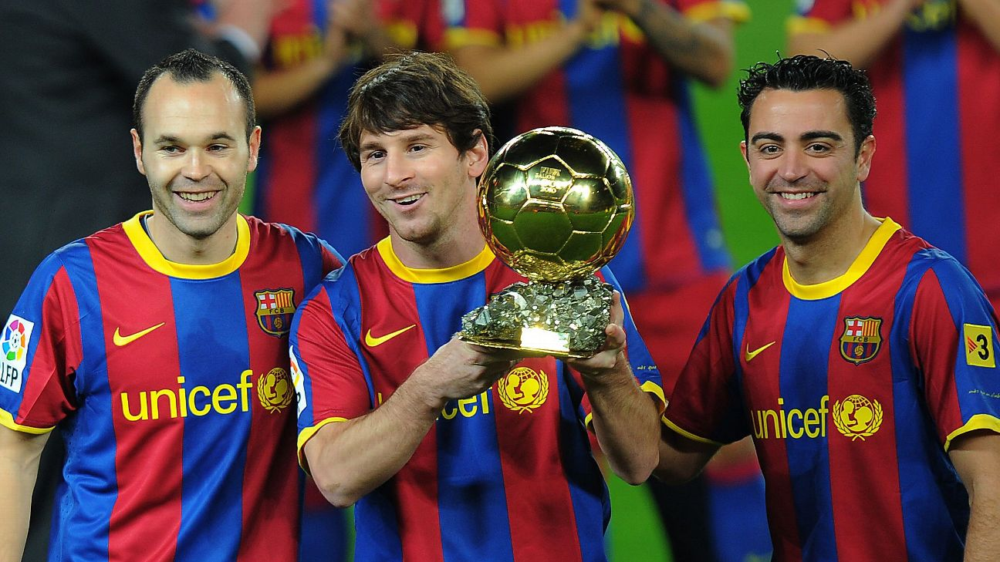

Messi
En 2010, Lionel Messi ganó el Balón de Oro, a pesar de que España acababa de ganar el Mundial, con Xavi e Iniesta como piezas clave del título. Muchos aficionados y expertos consideraban que Iniesta (autor del gol en la final) o Xavi (cerebro del equipo) merecían ese premio más que Messi, quien tuvo una Copa del Mundo discreta con Argentina ese año.
Nedved ante Thierry Henry
En 2003, el checo Pavel Nedvěd ganó el Balón de Oro tras una gran temporada con la Juventus, llegando a la final de la Champions (aunque no jugó la final por sanción) y ganando la Serie A. Sin embargo, Thierry Henry tuvo un año espectacular con el Arsenal, liderando en goles y asistencias en la Premier League.
